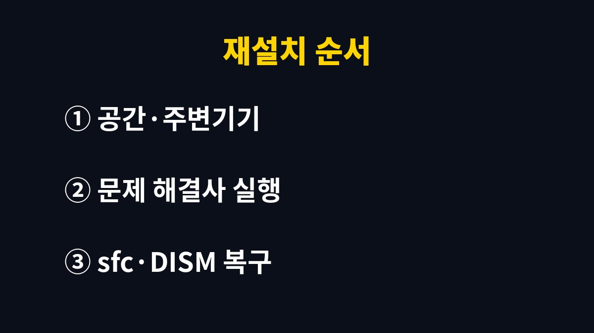

윈도우11 업데이트 실패는 저장 공간 부족, 이전 업데이트의 재시작 대기, 꼬인 업데이트 구성요소 가운데 하나에서 시작하는 경우가 많다.
오류 코드를 검색하기 전에 설정 화면 몇 곳만 순서대로 보면 다시 설치까지 가는 일이 흔하다.
2026년 11월 기준 Windows 11 메뉴 이름으로 적었다.
설정 > Windows 업데이트 > 업데이트 기록으로 들어가면 실패한 항목 옆에 0x로 시작하는 오류 코드가 적혀 있다.
이 코드와 업데이트 이름을 메모해 두면 나중에 지원 문서를 찾거나 문의할 때 설명이 짧아진다.
코드 없이 다시 시도만 반복되는 경우도 있는데, 이때는 아래 표의 순서로 내려가면 된다.
예를 들어 퇴근 직전에 업데이트 확인을 눌렀는데 다음 날 아침에도 같은 화면이라면, 밤새 실패와 재시도를 반복했을 가능성이 크다.
그런 날은 기록 화면에 실패가 여러 줄 쌓여 있어 시각 순서로 보면 처음 실패한 항목이 어디인지 보인다.
업데이트 화면에 다시 시작 필요 표시가 떠 있는데 노트북을 절전으로만 두고 며칠 쓰는 경우가 많다.
절전은 전원만 아끼는 상태라 대기 중인 파일이 교체되지 않는다.
다시 시작을 한 번 눌러야 이어지는 업데이트가 설치된다.
시작 메뉴의 전원 버튼에 업데이트 후 다시 시작이 따로 보이면 종료가 아니라 그쪽을 고른다.
나는 노트북 덮개만 닫는 습관이 있어서 이 표시를 몇 주씩 못 보고 지나친 적이 있다.
같은 실패라도 멈추는 지점에 따라 점검 순서가 달라진다.
내 화면이 어느 증상에 가까운지 보고 해당 줄부터 확인한다.
공식 안내와 실제 체감이 다른 점도 있다.
저장 공간은 여유가 있어 보여도 시스템 드라이브 한 곳만 부족한 경우가 있어서, 전체 용량이 아니라 C 드라이브 칸을 따로 봐야 한다.
| 증상 | 먼저 볼 곳 | 이유 |
|---|---|---|
| 업데이트 확인에서 진행이 없음 | 다시 시작 대기 여부 | 대기 중인 설치가 다음 업데이트를 막는다 |
| 다운로드 후 설치에서 실패 | C 드라이브 여유 공간 | 설치 중 임시 파일 공간이 더 필요하다 |
| 같은 업데이트만 반복 실패 | Windows 업데이트 문제 해결사 | 업데이트 구성요소 오류를 자동으로 점검한다 |
| 문제 해결사 후에도 실패 | sfc와 DISM 명령 | 손상된 시스템 파일을 복구한다 |
윈도우11 업데이트 실패가 반복될 때의 순서는 위에서 아래로 갈수록 손이 많이 가므로 앞 단계에서 풀리면 거기서 멈춰도 된다.
명령어 두 개는 관리자 권한 터미널에서만 정상으로 동작하고, 실행 중에는 창을 닫지 말고 끝날 때까지 기다린다.
시간이 걸려도 진행 표시가 멈춘 것처럼 보일 때가 있는데, 몇 분은 그대로 두는 것이 낫다.

윈도우11 업데이트 실패가 이어진다고 해서 윈도우를 새로 설치할 필요는 거의 없다.
초기화를 하더라도 문서와 사진은 원드라이브나 외장 저장장치에 먼저 복사해 둔다.
출처가 불분명한 업데이트 수정 프로그램은 받지 않는다.
그런 파일에 악성코드가 섞여 있는 사례가 있기 때문이다.
회사에서 지급한 노트북은 관리자가 업데이트 정책을 걸어 둔 경우가 있다.
이때는 개인이 설정을 바꿔도 소용이 없어서 IT 담당자에게 묻는 편이 빠르다.
개인 노트북이라도 제조사 전용 업데이트 프로그램이 따로 깔려 있으면 드라이버 업데이트는 그쪽 안내를 먼저 따른다.
업데이트 서비스를 직접 끄고 켜는 방법도 많이 보이는데, 나는 문제 해결사와 sfc, DISM까지만 쓴다.
다음에 확인할 것은 업데이트 화면에 다시 시작 대기 표시가 있는지 하나다.
위 순서를 모두 해도 같은 코드로 실패하면 그 코드와 업데이트 이름을 들고 제조사 서비스센터나 Microsoft 지원에 문의한다.
※ 2026년 기준 공식 안내를 바탕으로 정리한 글이며, 기기·앱 버전에 따라 메뉴 이름이 다를 수 있다.